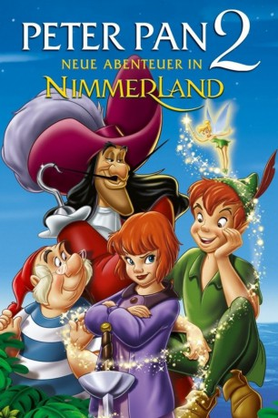

gesehen am 11.07.2015
gesehen am 11.07.2015Alternativ: Return to Never Land gesehen am 11.07.2015
 
 IMDB-Wertung: 5.8 / 10
IMDB-Wertung: 5.8 / 10  Metascore:
Metascore: 
Der Zweite Weltkrieg verwandelt Wendys Tochter Jane in eine Realistin, ein Mädchen, das auf Geschichten und Spaß verzichtet, solange bis London in sich zusammenfällt. Peter Pans Erzfeind Käpt'n Hook entführt die kleine Jane, die er irrtümlich für Wendy hält, ins Fantasiereich Nimmerland, um sich an den Elfenjungen Peter Pan, der Fee Naseweis und den verwunschenen Kindern zu rächen.
Jahr: 2002
Dauer: 72 Minuten
FSK: 0
Land: USA Studio: Buena Vista PicturesTonspuren: DTS - ,
Untertitel: Deutsch,
Auflösung: 1080p (1920x1080) Größe: 4044 MB
Genre: Animation/Trick, Abenteuer, Familie, Fantasy
Regisseur: Robin Budd, Donovan Cook
Drehbuch: Temple Mathews, Carter Crocker, J.M. Barrie
Soundtrack: John Flansburgh, John Linnell, Joel McNeely
Darsteller:
 Corey Burton als Captain Hook
Corey Burton als Captain Hook Jeff Bennett als Smee / Pirates
Jeff Bennett als Smee / Pirates Kath Soucie als Wendy Darling
Kath Soucie als Wendy Darling Roger Rees als Edward
Roger Rees als Edward Spencer Breslin als Cubby
Spencer Breslin als Cubby Bradley Pierce als Nibs
Bradley Pierce als Nibs Dan Castellaneta als
Dan Castellaneta als  Jim Cummings als
Jim Cummings als  Rob Paulsen als
Rob Paulsen als  Clive Revill als
Clive Revill als  Frank Welker als
Frank Welker als  Wally Wingert als
Wally Wingert als Datei: X:\Kinder Disney HD\Peter Pan\Peter Pan 2 - Neue Abenteuer in Nimmerland (2002, FSKo.Al., 1920x1080).mkv seit 15.05.2015
Festplatte: Kinder-Filme+Trick
 Alle Filme aus Gruppe 'Kinder Disney HD\Peter Pan'
Alle Filme aus Gruppe 'Kinder Disney HD\Peter Pan'